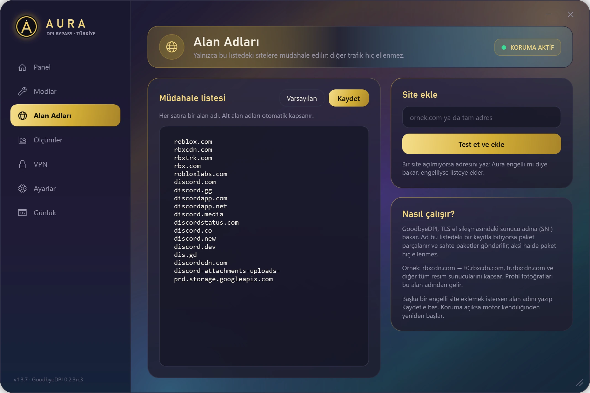

Roblox ve Discord'a takılmadan gir.
Stryde, Türkiye'deki erişim engelini aşan ücretsiz bir Windows uygulaması. Kur, düğmeye bas, oyna.
Windows 10 ve 11. 0,9 MB. Hesap istemez.
İmzasız dosya neden güvenli? GitHub'da tüm dosyalar
Stryde yalnızca Windows bilgisayarda çalışır. Bu sayfanın adresini bilgisayarına gönder.

Ne yapar
Stryde, açık kaynaklı GoodbyeDPI motorunu senin yerine yönetir.
- Engeli aşar
- Roblox ve Discord'un 11 sunucusuna erişimi açar. Her birini iki dakikada bir denetler ve durumunu gösterir.
- Resimleri yükler
- Profil fotoğrafları ve oyun görselleri boş kalmaz. Stryde resim sunucularını çalışan adreslere yönlendirir.
- Hızı düşürmez
- Yalnızca Roblox ve Discord adreslerine dokunur. Steam, YouTube ve tarayıcı indirmeleri olduğu gibi kalır.
- Ayarı kendi bulur
- 7 modu senin hattında ikişer kez dener, eksiksiz çalışan en hafifini seçer. Yaklaşık 3 dakika sürer.
- Kendini günceller
- Yeni sürüm çıkınca haber verir ve tek tıkla kurar. Bu siteye tekrar gelmen gerekmez.
- VPN de var
- Başka engelli siteler için Cloudflare WARP tüneli. Ücretsizdir, hesap istemez, uygulamanın içinden açılır.


Güven
İmzasız bir dosya indiriyorsun. Neden imzasız olduğu ve bilgisayarında ne yaptığı burada yazıyor.
- Windows neden uyarıyor?
- Kurulum dosyasında dijital imza yok. İmza için her yıl ücret ödenen bir sertifika gerekir, Stryde ise tek kişinin yaptığı ücretsiz bir uygulama. Windows SmartScreen imzasız ve az indirilen her dosyada “bilinmeyen yayıncı” uyarısı verir.
- Antivirüs neden uyarabilir?
- Stryde, ağ paketlerini değiştirebilmek için WinDivert sürücüsünü kullanır. Sürücü açık kaynaklıdır ve yazarı tarafından imzalanmıştır. Aynı sürücü kötü amaçla da kullanılabildiği için bazı antivirüsler onu içeren her programı “riskli araç” olarak işaretler.
- Bilgisayarda ne yapar?
- Yönetici izni ister, çünkü sürücüyü yüklemek ve DNS ayarını değiştirmek bunu gerektirir. Kapanırken DNS ayarını eski haline getirir. Kaldırdığında dosyaları ve başlangıç görevleri silinir.
- Kendini nasıl korur?
- Stryde her bağlanışta motor ve sürücü dosyalarının özetini beklenen değerle karşılaştırır. Dosyalardan biri değiştirilmişse motoru başlatmaz. Güncelleme indirdiğinde paketin özetini de doğrular, tutmazsa kurmaz.
- Kod açık mı?
- Motor (GoodbyeDPI) ve sürücü (WinDivert) açık kaynaklıdır. Stryde'ın kendi kodu henüz yayınlanmadı.
- Dosyayı doğrula
- Kurulum dosyasının SHA-256 özeti:
GitHub'daki sürüm sayfasında yazar. İndirdiğin dosyadacertutil -hashfile StrydeSetup.exe SHA256komutu aynı değeri veriyorsa dosya GitHub'daki ile aynıdır. Dosyayı VirusTotal'a yükleyip kendin de tarayabilirsin. Birkaç antivirüs WinDivert yüzünden uyarı verebilir.
İndirme hızı
Aynı bilgisayar, aynı hat, aynı sunucu. Üç ölçüm art arda yapıldı.
- Koruma kapalı 24,6Mbps
- Klasik GoodbyeDPI, tüm trafik 4,7Mbps
- Stryde 24,7Mbps
Koşullar: Türk Telekom, 24 Mbps hat, kablolu bağlantı, Cloudflare hız testi, tek indirme.
Fark neden oluşuyor: Klasik kurulum bilgisayardan çıkan her bağlantıyı değiştirir, hız testi ve oyun indirmeleri de buna dahildir. Stryde yalnızca listedeki Roblox ve Discord adreslerine giden bağlantıların ilk paketlerini değiştirir. Başka bir adrese giden bağlantıya ve indirilen verinin kendisine dokunmaz.
Daha hızlı hatlar: Fiber hatta ölçüm yapmadık. Stryde'ın yaptığı iş indirilen veri miktarına bağlı olmadığı için hat hızlandıkça kaybın artmasını beklemiyoruz. Kendi hattında görmek için uygulamadaki Ölçümler sayfasında hız testini koruma açıkken ve kapalıyken çalıştır.
Kurulum
Kurulum 1 dakikadan kısa sürer. İlk açılışta bir kez çalıştıracağın Otomatik Optimize yaklaşık 3 dakika sürer.
- İndir ve çalıştır
StrydeSetup.exedosyasını aç. Windows “bilinmeyen yayıncı” derse önce “Ek bilgi”, sonra “Yine de çalıştır” de. - “Kur” düğmesine basYönetici iznine “Evet” de. Stryde kurulur, masaüstüne kısayolu gelir ve kendiliğinden açılır. Bilgisayarında .NET 8 yoksa kurulum programı onu Microsoft'tan kendisi indirip kurar (yaklaşık 58 MB, bir kez).
- OynaEkranda “KORUMA AKTİF” ve 11/11 yazıyorsa hazırsın. İlk seferde bir kez “Otomatik Optimize” düğmesine bas. Stryde yaklaşık 3 dakikada hattına uyan ayarı bulur.
Tarayıcı indirmeyi engellerse: Chrome ve Edge az indirilen dosyalarda “yaygın olarak indirilmiyor” uyarısı verir. İndirilenler listesinde dosyanın yanındaki menüden “Sakla” de.
Antivirüs uyarı verirse: Stryde'ın kullandığı ağ sürücüsü WinDivert açık kaynaklıdır, ama bazı antivirüsler onu şüpheli sayar. Kurulum klasörünü dışlamalara ekle. Kaspersky ile çalışmaz.
Kurmadan kullanmak için: tam paketi (yaklaşık 60 MB) bir klasöre çıkar ve Stryde.exe dosyasını çalıştır. Bilgisayarında .NET 8 varsa küçük paket yeter.
Kaldırmak için: Windows Ayarlar, Uygulamalar, “Stryde”, Kaldır. Koruma kapanır ve internet ayarların eski haline döner.
Son değişiklikler
Stryde yeni sürümü kendisi kurar.
- 2.1.4Daha sade ve keskin görünüm: mat yüzeyler, gradyan ve parlama yok, yeni elmas imleç ve düzenlenmiş sayfalar.
- 2.1.3İmleçler yenilendi: altın çerçeveli lacivert ok, tıklanabilir yerlerde altın el ve Stryde çalışırken dönen dişli çark.
- 2.1.2Stryde'ın artık vurgu renginde kendi imleci var; istemezsen Ayarlar'dan kapatabilirsin.
Sorular
Ücretli mi?
Hayır. Stryde ücretsizdir, hesap açtırmaz ve reklam göstermez.
Bilgilerimi topluyor mu?
Hayır. Stryde'ın kendi sunucusu yoktur ve ne yaptığını kimseye bildirmez. Yalnızca şu adreslere bağlanır: güncelleme için GitHub, şifreli adres sorguları için Google ve Cloudflare, panelde dış IP adresini göstermek için ipinfo.io ve Cloudflare.
IP adresimi gizler mi?
Hayır. Stryde engeli aşar ama IP adresini değiştirmez, girdiğin site gerçek adresini görür. Oyunda gecikmenin artmamasının nedeni budur. Adresinin değişmesini istersen uygulamadaki VPN sayfasını kullan.
Windows neden “bilinmeyen yayıncı” diyor?
Kurulum dosyasında ücretli bir dijital imza yok. “Ek bilgi” ve ardından “Yine de çalıştır” diyerek devam edebilirsin.
Türk Telekom, Superonline ve TurkNet'te çalışır mı?
Türk Telekom'da çalışır: Stryde bu hatta geliştirildi ve ölçümler orada yapıldı. Superonline, TurkNet ve diğer sağlayıcılarda ölçüm yapmadık. Bu hatlarda “Otomatik Optimize” 7 farklı modu dener ve senin hattında çalışanı seçer. Hiçbir mod çalışmazsa uygulama bunu açıkça söyler.
Roblox ve Discord açılmıyor, ping artırmadan nasıl çözülür?
VPN bütün bağlantını başka bir ülkedeki sunucudan geçirir, ping bu yüzden artar. Stryde bağlantını başka bir yerden geçirmez. Yalnızca Roblox ve Discord'a giden bağlantının ilk paketlerini değiştirir, oyun verisi doğrudan Roblox sunucusuna gider. Stryde'ı kur, güç düğmesine bas, Roblox'u ya da Discord'u aç.
Aura'ya ne oldu?
Stryde, Aura'nın yeni adıdır. Uygulama aynıdır. Bilgisayarında Aura kuruluysa güncelleme Stryde'ı kendiliğinden kurar, eski Aura'yı kaldırır ve ayarlarını korur.
Kapatınca internetim bozulur mu?
Hayır. Stryde kapanırken yaptığı ayarları geri alır. Bilgisayar aniden kapanırsa ayarlar bir sonraki açılışta düzeltilir.
Sorun yaşarsam ne yapmalıyım?
Uygulamada Günlük sayfasındaki “Tanı raporu kopyala” düğmesine bas. Sistem, bağlantı ve son olaylar tek metin olarak kopyalanır. Sonra GitHub'da yeni bir sorun kaydı aç, ne olduğunu yaz ve raporu altına yapıştır.
Kayıt herkese açık olur. Uygulama raporda IP adresini ve Windows kullanıcı adını kendisi gizler. Yine de göndermeden önce raporda IP adresinin kalmadığına bak. Kayıt açmak için ücretsiz bir GitHub hesabı gerekir.
Kurulum bir dakikadan kısa sürer.
Stryde'ı indir